<!-- ================================ -->
<!-- START RIGHT MENU BAR -->
<!-- ================================ -->
<div id="elementToHide" class="btn-sidemenu-icon bg-white rounded-full p-2">
  <!-- TABEL ICON -->
  <button (click)="zoomIn()" class="btns btn-tabel mov">
    
  </button>
  <button (click)="zoomOut()" class="btns btn-tabel mov">
    
  </button>
  <!-- <button class="btns btn-tabel mov">
    
  </button> -->
  <!-- HAND ICON -->
  <!-- <button class="btns btn-sub-search mov">
    
  </button> -->
  <!-- HOME ICON -->
  <button (click)="goHome()" class="btns btn-home mov">
    
  </button>
  <!-- PREV ICON -->
  <button (click)="goBackExtent()" class="btns btn-prev mov" id="zoomPrevBtn">
    <!--esri-widget--button esri-widget esri-disabled-->
    
  </button>
  <!-- NEXT ICON -->
  <button (click)="goForwardExtent()" class="btns btn-next mov" id="zoomNextBtn">
    <!--esri-widget--button esri-widget esri-disabled-->
    
  </button>
  <!-- LAYERS ICON -->
  <button (click)="toggleLayerList()" class="btns btn-layers mov">
    
  </button>
  <!-- SWITCH MAP ICON -->
  <button (click)="toggleBaseMap()" class="btns btn-switch-map mov">
    
  </button>
  <!-- PRINT  ICON -->
  <button class="btns btn-details mov" (click)="printScreen()">
    
  </button>
  <!-- PDF EXPORT ICON -->
  <button class="btns btn-details mov" (click)="exportToPDF()">
    
  </button>
  <!-- DETAILS ICON -->
  <button class="btns btn-details mov" (click)="showPopup()">
    
  </button>

</div>


<app-pdf-report *ngIf="isPrinting"></app-pdf-report>


<!-- <div class="full-screen-box w-full h-full" *ngIf="isPrinting" #pdfContent >


  <div class="section small-section border-[1px] border-black">
    <p>Content of the smaller section</p>
  </div>
  <div class="section large-section border-[1px] border-black">
    <p>Content of the larger section</p>
  </div>

</div> -->